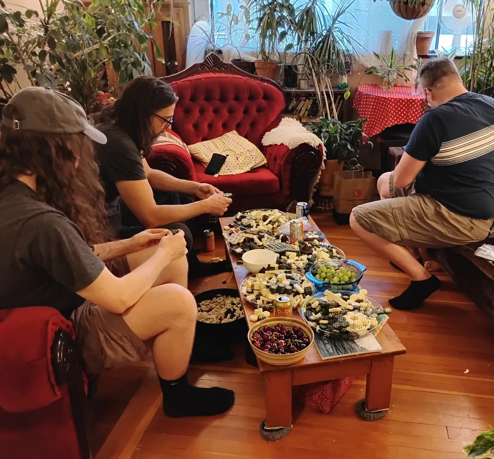
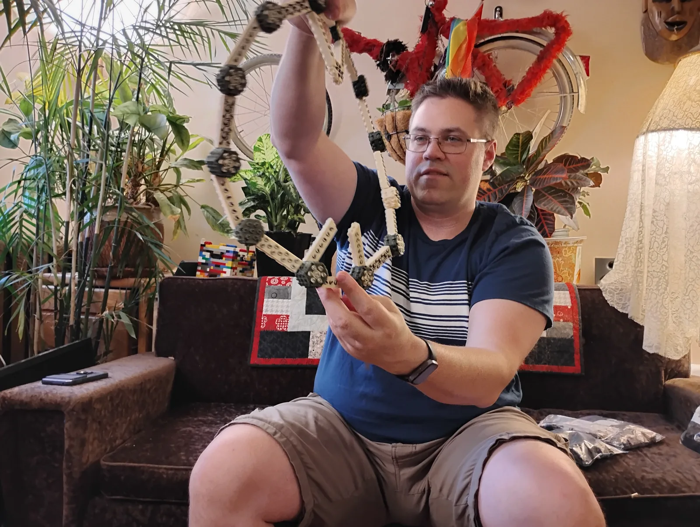
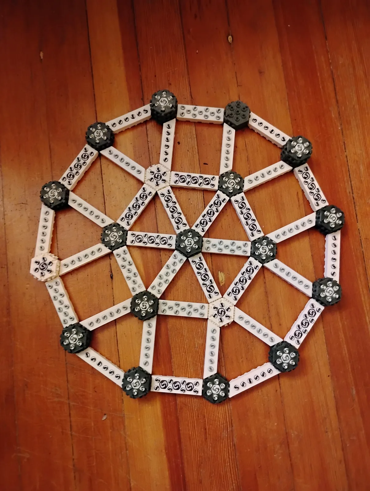
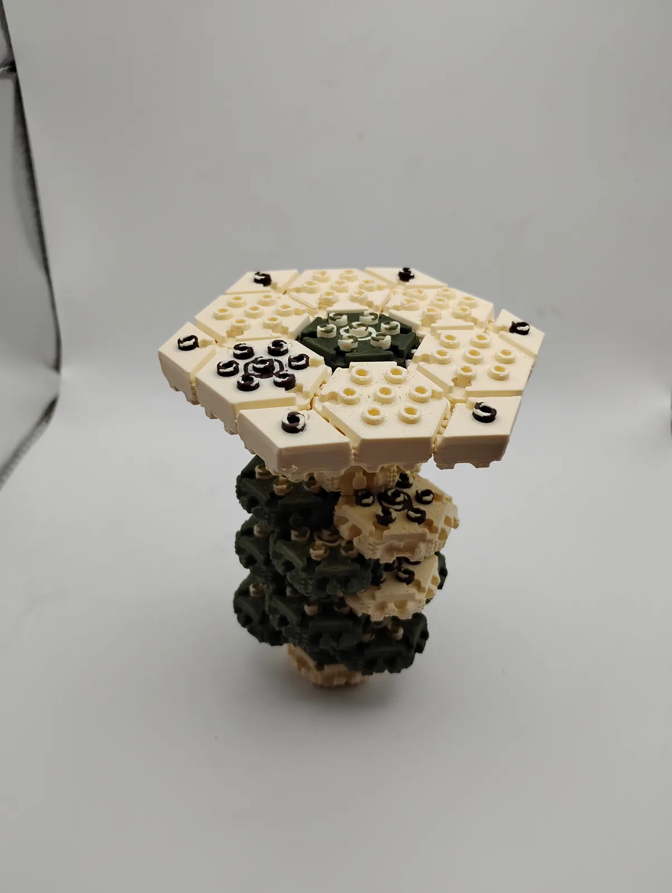
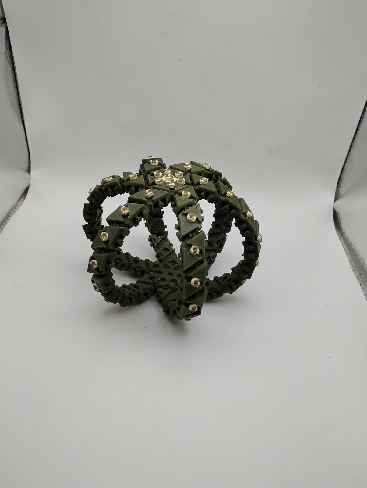
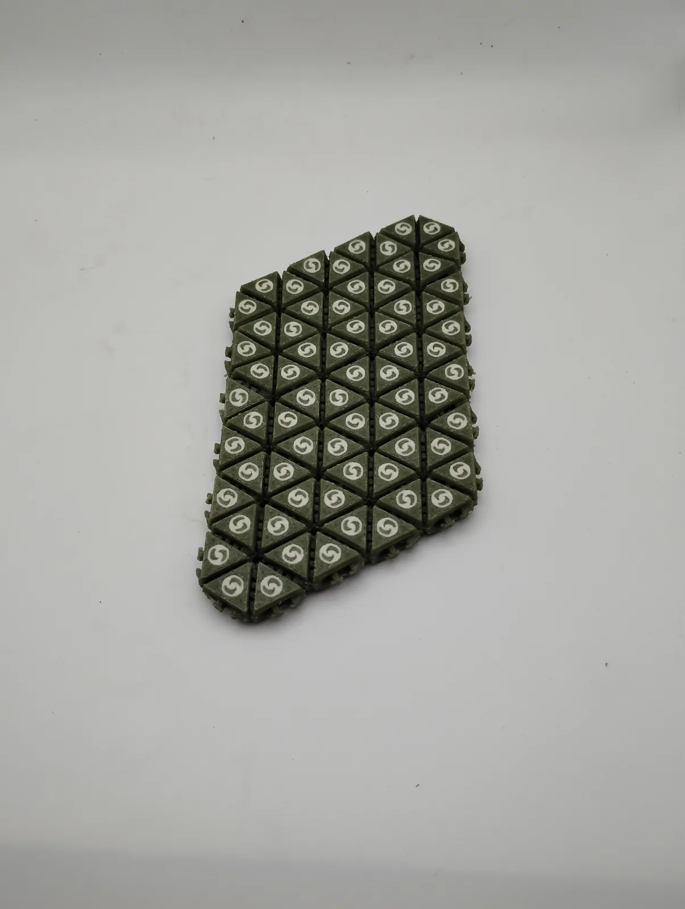
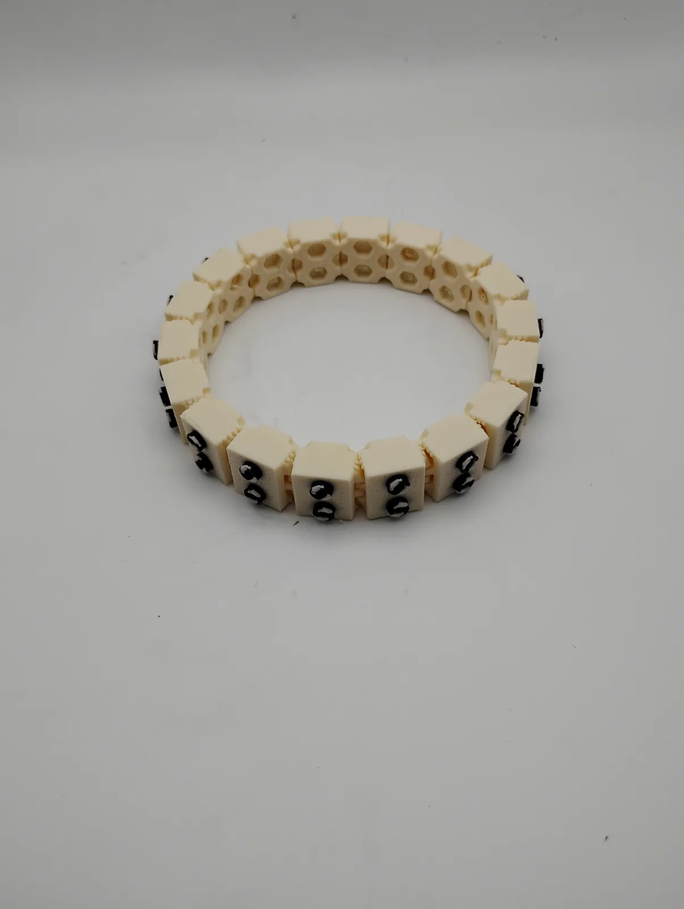
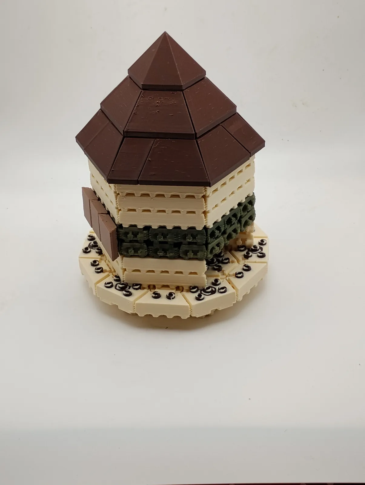

For most of its history SeaBrick had existed as drawings, a handful of prototypes and a lot of conversation. Through the spring of 2026 that changed: week by week, a growing stockpile of 3D-printed model bricks accumulated in bowls and boxes, roughly a thousand pieces across some fifty shapes and sizes by June. The invitation that went out on 9 June called it a soft launch. It was really a test.

The question
Model bricks are not structural samples; they tell you nothing about strength or seawater. What they tell you is whether the system makes sense to a person holding it. Which shapes do people reach for? What do they try to build? Where do they get stuck? The afternoon's job was to help choose the first brick set, the small family of pieces that would be worth printing in quantity.




What we learned
People built rings, frames and wheels first, then towers, then mats. Long thin pieces were used as beams far more than expected. Closed shapes, rings and tubes, were satisfying to make and surprisingly stiff. Flat mats were slower to build but immediately suggested platforms. The four-year-old in attendance built more, and faster, than anyone else, which told us something about how intuitive the connections had become.



The studio photographs above were taken the following week, as the pieces people had made were sorted into the arrangements now illustrated on the technology page: mats, tubes and columns, walls and enclosures.